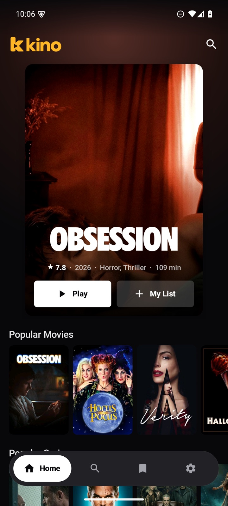
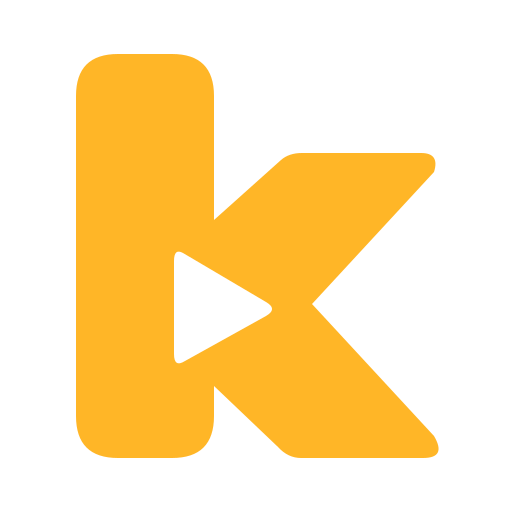

Title. Stream. Play.
Kino is a 5 MB app for Android TV and phones that plays what your Stremio addons find.
Free and open source. Android 6.0 and up.
Real screenshots from Kino on Android TV. Playback shows Tears of Steel (Blender Foundation, CC BY).

The same couch, in your pocket.
One APK runs on your TV and your phone. Sign in to your Nuvio account and both pick up where you left off.
- Your addons come with youNuvio brings your addon list, My List and Continue Watching.
- Sign in with a code on TVA code appears on screen. Enter it at nuvio.tv/link on your phone. Email and password work too.
- No account neededKino works on its own. Nuvio is optional.
Your addons. Not ours.
Kino ships no streams. A fresh install comes with Cinemeta for catalogs and details. Streams come from the addons you add.
Settings → Add an addon, then paste its link.
- Any Stremio addonKino speaks the same addon protocol, so the links you already use work.
- About 5 MBPlain Android Views and the platform's own networking. Fast on cheap TV boxes.
- Plays the hard formatsMedia3 ExoPlayer, with FFmpeg for DTS, TrueHD and AC3 when the device can't.

Get Kino.
One APK for Android TV and phones. Free, open source, MIT licensed.
On a phone
Open the APK from your downloads and allow installs from your browser when Android asks.
On a TV
Use a downloader app with the release link, or from a computer run adb install kino.apk.
Then
Sign in to Nuvio, or add an addon in Settings. You'll be watching in a couple of minutes.